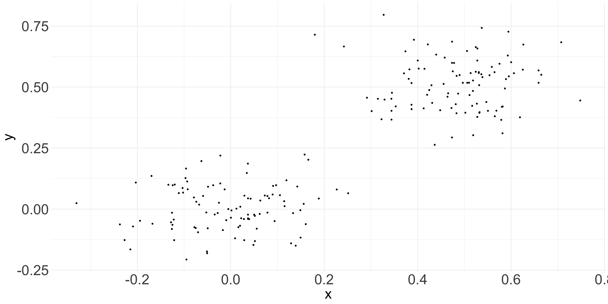
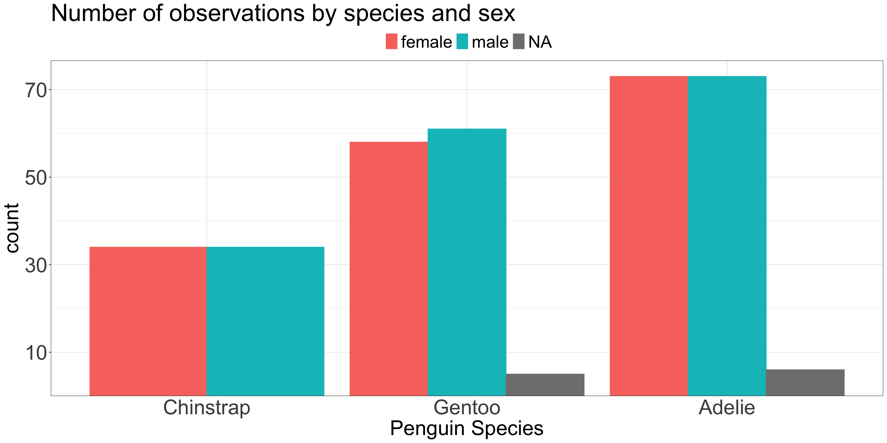

Caution: these can create spurious interpretations
Code
related_data <-data.frame(x =c(rnorm(100, 0, 0.1), rnorm(100, 0.5, 0.1)), y =c(rnorm(100, 0, 0.1), rnorm(100, 0.5, 0.1)))ggplot(related_data, aes(x = x , y = y)) +geom_point(size =1.2) +theme_minimal() +theme(plot.title=element_text(size=35),axis.ticks.x=element_blank(),axis.text=element_text(size=30),axis.title=element_text(size=30) )

Counteract by using another principle
Code
related_data$g <-as.factor(ifelse(rbinom(200, 1, prob =0.5) ==1, 'F', 'M'))ggplot(related_data, aes(x = x , y = y, color = g, shape = g)) +geom_point(size =4) +guides(colour =guide_legend(override.aes =list(size=7))) +theme_minimal() +theme(plot.title=element_text(size=35),axis.ticks.x=element_blank(),axis.text=element_text(size=30),axis.title=element_text(size=30),legend.title =element_blank(),legend.position ='top',legend.text =element_text(size =25) )
Position is interpreted most accurately
Common y-axis alignment allows for accurate interpretation
Categories in the x-axis sorted by y-axis value
Position should encode the answer to the questions the audience asks
Code
library(palmerpenguins)library(forcats)fct_revfreq <- \(x) fct_rev(fct_infreq(x))ggplot(penguins, aes(x =fct_revfreq(species))) +geom_bar(stat ="count") +scale_y_continuous(expand =expansion(c(0,0.05)),breaks =seq(10,150, by =20)) +labs(title ="Number of observations by species",x ="Penguin Species" ) +theme_bw() +theme(plot.title=element_text(size=35),legend.text=element_text(size=25),axis.ticks.x=element_blank(),axis.text=element_text(size=30),axis.title=element_text(size=30) )
Lengths of unaligned segments are harder to compare
Are there more female Gentoo or female Adelie penguins?
Are there more male or female Gentoo penuins?
Code
ggplot(penguins, aes(x =fct_revfreq(species), color = sex, fill = sex)) +geom_bar(stat ="count") +scale_y_continuous(expand =expansion(c(0,0.05)),breaks =seq(10,150, by =20)) +labs(title ="Number of observations by species and sex",x ="Penguin Species" ) +theme_bw() +theme(plot.title=element_text(size=35),axis.ticks.x=element_blank(),axis.text=element_text(size=30),axis.title=element_text(size=30),legend.position='top',legend.text=element_text(size=25),legend.title=element_blank() )
If the total number is not important but sub-group numbers are…
Are there more female Gentoo or female Adelie penguins?
Are there more male or female Gentoo penuins?
Code
ggplot(penguins, aes(x =fct_revfreq(species), color = sex, fill = sex)) +geom_bar(stat ="count", position ='dodge') +scale_y_continuous(expand =expansion(c(0,0.05)),breaks =seq(10,150, by =20)) +labs(title ="Number of observations by species and sex",x ="Penguin Species" ) +theme_bw() +theme(plot.title=element_text(size=35),axis.ticks.x=element_blank(),axis.text=element_text(size=30),axis.title=element_text(size=30),legend.position='top',legend.text=element_text(size=25),legend.title=element_blank() )

Using pre-attentive attributes
Action potentials are means of communication between neurons in the brain
The probability of firing depends on the strength of the stimulus
The strength of the stimulus is relative to the background
All or nothing process
Once the threshold is exceeded the neuron fires
Takeaway for visualization:
Most important information needs to be “highlighted” relativ to all other information
med <-dagify(z ~ x, y2 ~ z,coords =list(x =c(x =1, z =1.5, y2 =2), y =c(x=1, y2 =1, z=1))) %>%tidy_dagitty() %>%mutate(fill =ifelse(name =="z", "Mediator", "variables of interest")) %>%ggplot(aes(x = x, y = y, xend = xend, yend = yend)) +geom_dag_point(size=7, aes(color = fill)) +geom_dag_edges(show.legend =FALSE)+geom_dag_text() +theme_dag() +theme(legend.title =element_blank(),legend.position ="top") med
x causes y through z
Controlling for z blocks the causal association x \(\rightarrow\) y2
Analyzing DAGs: Collider
Bad control
Code
dagify(a ~ x, a ~ y,coords =list(x =c(x =1, y =2, a =1.5), y =c(x =1, y =0, a =0))) |>tidy_dagitty() |>mutate(fill =ifelse(name =="a", "Collider", "variables of interest")) |>ggplot(aes(x = x, y = y, xend = xend, yend = yend)) +geom_dag_point(size =7, aes(color = fill)) +geom_dag_edges(show.legend =FALSE) +geom_dag_text() +theme_dag() +theme(legend.title =element_blank(),legend.position ="top" )
x & y cause a
x & y are d-separated and uncorrelated
By adding a to the model spurious correlation between x & y is introduced
Analyzing DAGs: Fork
Good Control
Code
med <-dagify( x ~ d, y1 ~ d,coords =list(x =c(x =1, z =1.5, y =2, a =1.5, b =2, d =1.5, y1 =2), y =c(x =1, y =1, z =1, a =0, b =0, d =2, y1 =2))) %>%tidy_dagitty() %>%mutate(fill =ifelse(name =="d", "Confounder", "variables of interest")) %>%ggplot(aes(x = x, y = y, xend = xend, yend = yend)) +geom_dag_point(size=7, aes(color = fill)) +geom_dag_edges(show.legend =FALSE)+geom_dag_text() +theme_dag() +theme(legend.title =element_blank(),legend.position ="top") med
d causes both x and y1
Arrows pointing to x are called “back-door” paths
Controlling for d “blocks” the non-causal association x \(\rightarrow\) y1
. . .
Eliminated by randomized experiment! Why?
Randomized experiments
Researcher manipulates the variable of interest (x)
Holding all other variables (confounders) constant
To check the “pure” causal effect of the manipulation on the relevant outcome (y)
Intuition: variation in y has to be due to x as all other things are kept constant
Code
exper <-dagify( x ~ d, y ~ d, y ~ x,coords =list(x =c(x =1, d =1.5, y =2), y =c(x =0, d =1, y =0))) |>tidy_dagitty() %>%mutate(fill =ifelse(name =="d", "Confounder", "variables of interest")) %>%ggplot(aes(x = x, y = y, xend = xend, yend = yend)) +geom_dag_point(size=7, aes(color = fill)) +geom_dag_edges(show.legend =FALSE, aes(edge_color =ifelse(name =='d', 'gray80', 'darkgreen'),edge_linetype =ifelse(name =='d', 'dashed', 'solid') ))+geom_dag_text() +theme_dag() +theme(legend.title =element_blank(),legend.position ="top") +geom_text(aes(x =1.5, y =1, label ='← kept constant'), hjust =-0.3)exper
Notes on choosing a model
Often models assume a distribution of the error term
e.g., linear regression: normal distribution
We can choose a model based on its assumptions
e.g., continuous data: linear regression
e.g., binary data: logistic regression
Specialized methods for dependent observations
e.g., paired t-test \(\rightarrow\) test on difference of within-subject design
Specialized methods for violations of assumptions
e.g., Wilcoxon signed-rank test as alternative to t-test
Visualizing Uncertainty: Simple experiments
Outputs from statistical models should generally include:
Effect size
Test statistic calculated (incl. paramters) & p-value
It is typical to include an interpretation of significance
However, this is not recommended by statistical community. Wasserstein, Schirm, and Lazar (2019):
“if p = 0.03 then “…was statistically significant” would be replaced by “…had p = 0.03,””
The ggstatsplot library (Patil 2021) provides useful functions to calculate and visualize statistical tests and model parameters
Follows best practices
ggbetweenstats & ggwithinstats for between- and within-subject experimental designs
Chooses automatically between t-test (2 groups) and ANOVA (3+ groups)
Large number of tests available
Choose type='nonparametric' for versions that are robust to violations of the normal-distribution assumption
Choose type='robust' for versions that are robust to a few outliers
Rule of thumb: visualize up to 7 groups with colors
More become hard to differentiate
ggplot(penguins, aes(x =fct_revfreq(species), color = sex, fill = sex)) +geom_bar(stat ="count", position ='dodge') +scale_fill_discrete_qualitative("pastel 1") +scale_y_continuous(expand =expansion(c(0,0.05)),breaks =seq(10,150, by =20)) +labs(title ="Number of observations by species and sex",x ="Penguin Species" ) +theme_bw() +theme(plot.title=element_text(size=35),axis.ticks.x=element_blank(),axis.text=element_text(size=30),axis.title=element_text(size=30),legend.position='top',legend.text=element_text(size=25),legend.title=element_blank() )
Color Vision Deficiency
~8% of men and ~0.5% of women have color vision deficiency (CVD) (“color blindness”)
We can simulate CVD using swatchplot(<palette>, cvd = TRUE)
Patil, Indrajeet. 2021. “Visualizations with statistical details: The ’ggstatsplot’ approach.”Journal of Open Source Software 6 (61): 3167. https://doi.org/10.21105/joss.03167.
Wasserstein, Ronald L., Allen L. Schirm, and Nicole A. Lazar. 2019. “Moving to a World Beyond ‘p < 0.05’.”The American Statistician 73 (March): 1–19. https://doi.org/10.1080/00031305.2019.1583913.